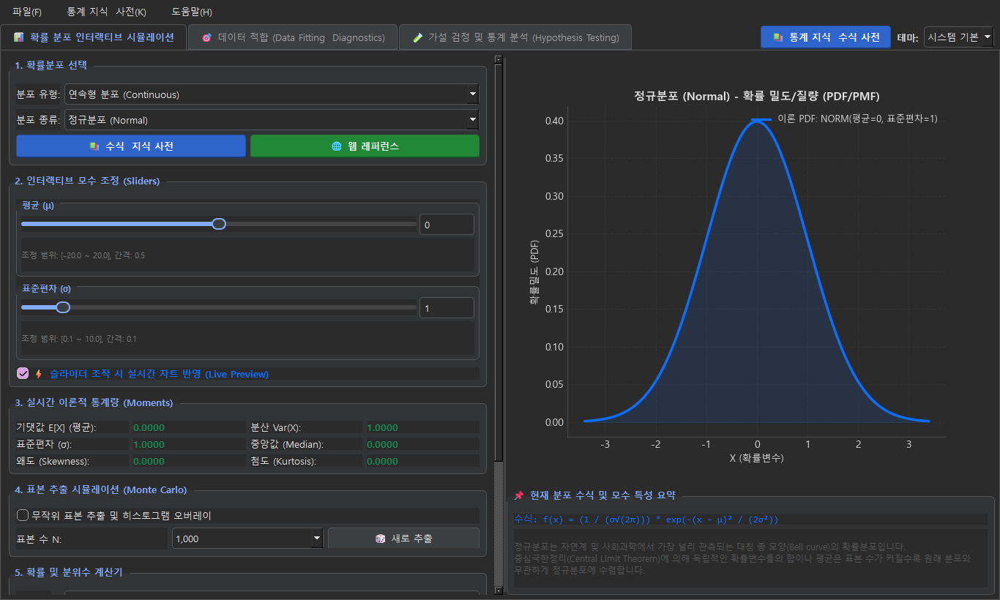
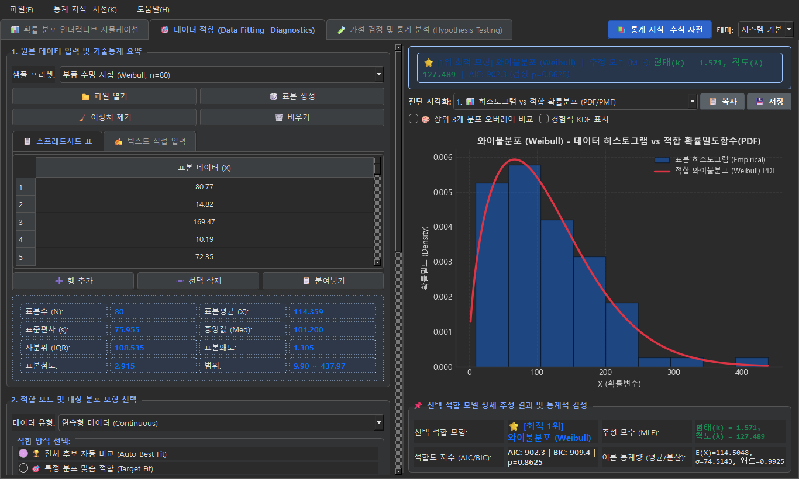
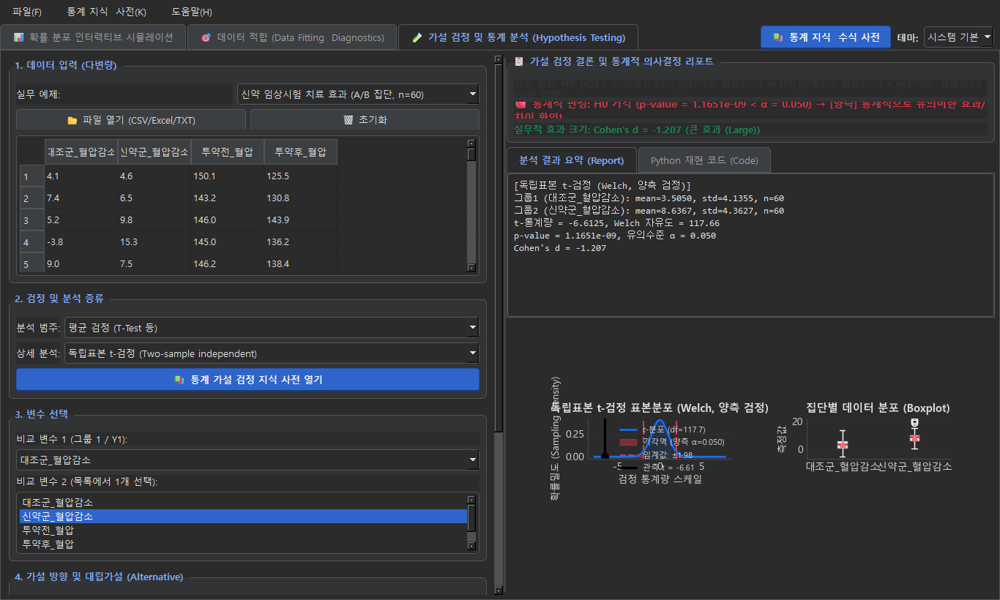
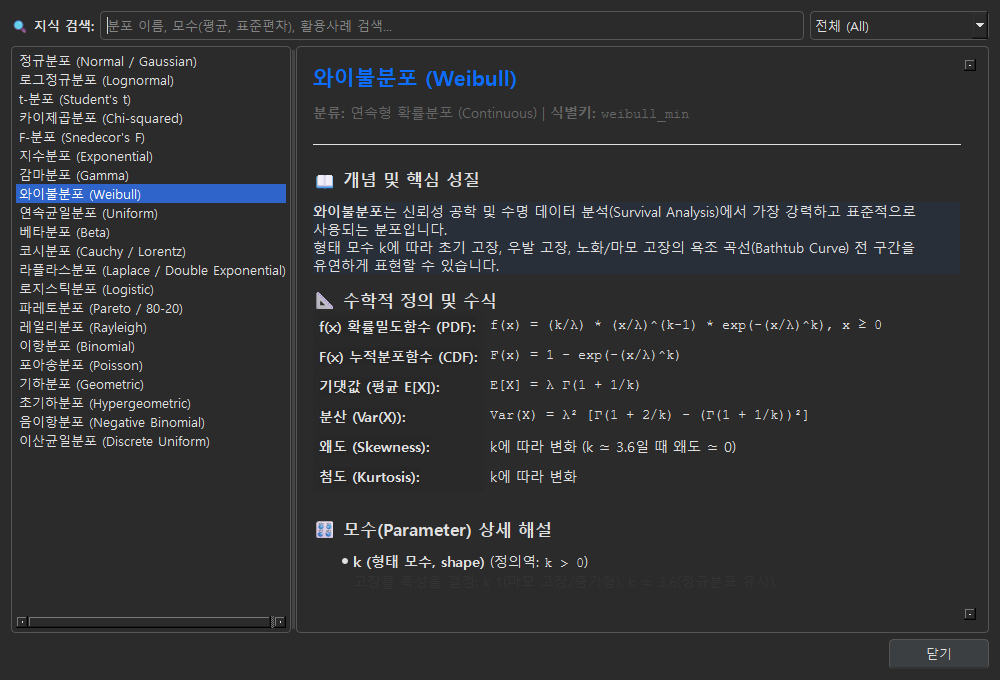

🎮 인터랙티브 웹 시뮬레이터 (Live Simulator)
실제 AlphaSpace 데스크톱 프로그램의 3대 핵심 분석 엔진을 웹 브라우저에서 즉시 체험해보세요.
AIC(아카이케 정보 기준) 값이 가장 작은 모형이 최적합 분포로 자동 추천됩니다.
| 순위 | 분포 | AIC | BIC | p-val | 판정 |
|---|
* 붉은 점선(이론적 45도 직선)에 관측 데이터가 밀착할수록 해당 분포에 잘 적합함을 증명합니다.
* 붉은 음영 영역: 기각역 (Rejection Region). 관측 검정통계량(검은 선)이 붉은 영역에 진입하면 귀무가설 H0이 기각됩니다.
🚀 프로그램 개요 & 시작하기
Alpha Space Data Analytics는 통계학자, 데이터 사이언티스트, 품질 관리 엔지니어, 연구원을 위해 설계된 올인원 통계 플랫폼입니다.
1초 스플래시 인트로
프로그램을 실행하면 Alpha Space 특유의 코스믹 감성 브랜딩 이미지가 1초간 표시된 후 메인 화면이 부드럽게 펼쳐집니다.
스마트 다크/라이트 테마
사용자 OS 환경 설정에 맞춰 최적의 다크/라이트 모드를 자동 적용하며, 상단 선택기로 실시간 전환할 수 있습니다.
단일 무설치 실행파일 (.exe)
복잡한 Python 가상환경 구축이나 패키지 설치 없이 USB나 로컬 PC에서 AlphaSpace.exe를 더블클릭하여 바로 사용합니다.
- 탭 1: 📊 확률 분포 인터랙티브 시뮬레이션 - 21종 수식 탐색, 실시간 모수 슬라이더, 몬테카를로 샘플링, 분위수 계산기
- 탭 2: 🎯 데이터 적합 (Data Fitting & Diagnostics) - CSV/Excel 업로드, MLE 추정, AIC/BIC 순위, Q-Q/P-P/잔차 진단
- 탭 3: 🧪 가설 검정 및 통계 분석 (Hypothesis Testing) - 18종 검정, 기각역 동적 시각화, Cohen's d 효과크기, 파이썬 코드 생성
📊 확률 분포 인터랙티브 시뮬레이션 완벽 가이드
이론적 분포의 형태 변화를 마우스 슬라이더 조작 하나로 직관적으로 체감할 수 있는 실시간 시각화 연구소입니다.

💡 주요 기능 및 조작법
1. 21종 분포 선택기
연속형 15종(정규, 와이불, 지수, 감마, 베타, t, F, 카이제곱, 코시, 라플라스 등)과 이산형 6종(이항, 포아송, 기하, 음이항, 초기하, 이산균일)을 드롭다운에서 선택할 수 있습니다.
2. 60fps 무지연 모수 슬라이더
슬라이더를 드래그하는 즉시 20ms 디바운스 엔진이 동작하여 끊김 없이 확률밀도곡선(PDF)이 실시간 변형됩니다. 우측 입력창에 정밀 숫자를 직접 타이핑할 수도 있습니다.
3. 몬테카를로 표본 추출기
N=100부터 10,000개까지의 난수를 이론 분포로부터 추출하여 히스토그램으로 오버레이합니다. 대수의 법칙(LLN)에 따라 표본수가 커질수록 이론 곡선에 수렴하는 과정을 시각적으로 확인합니다.
4. 확률 및 분위수 계산기
특정 X 값을 입력하면 누적확률 $P(X \le x)$이 계산되어 곡선 아래에 붉은 음영으로 칠해지며, 반대로 누적확률 0.95를 입력하면 상위 5% 임계 분위수가 역산됩니다.
🎯 데이터 적합 (Data Fitting & Diagnostics) 완벽 가이드
보유한 관측 데이터가 어떤 통계 분포를 따르는지 과학적으로 규명하고, 5종의 전문 진단 차트로 신뢰성을 검증합니다.

🔬 5대 과학적 진단 플롯 (Diagnostic Plots)
① PDF / 히스토그램 오버레이
실제 데이터의 관측 도수 히스토그램 위에 추정된 최적 분포 곡선 및 2위/3위 후보 곡선을 겹쳐 그려 육안 적합도를 평가합니다.
② 정규 / 분포 Q-Q 플롯 (Quantile-Quantile)
이론적 분위수와 관측 데이터 분위수를 1:1 매핑하여 45도 기준선과의 일치도를 확인합니다. 꼬리 부분의 왜곡(두꺼운 꼬리, 첨도)을 직관적으로 감지합니다.
③ P-P 플롯 (Probability-Probability)
경험적 누적확률과 이론적 누적확률을 비교하여 중심부 적합도를 정밀하게 점검합니다.
④ 경험적 CDF vs 이론 CDF
데이터의 계단형 누적분포함수와 추정 모형의 연속 누적곡선을 비교하여 Kolmogorov-Smirnov 검정 통계량의 최대 편차 지점을 파악합니다.
AIC는 모형의 적합도(Log-Likelihood)와 모수 개수(과적합 페널티)를 동시에 고려합니다. 후보 분포 간의 $\Delta \text{AIC} = \text{AIC}_i - \text{AIC}_{\text{min}}$가 2 미만이면 두 모형 모두 유력한 후보이며, 10 이상 차이나면 하위 모형은 기각됩니다.
🧪 가설 검정 및 통계 분석 (Hypothesis Testing) 완벽 가이드
A/B 테스트, 신약 효과 검증, 공정 개선 전후 비교, 마케팅 다중 회귀분석까지 18종의 가설 검정을 제공합니다.

🎯 3단계 직관적 의사결정 프로세스
가설 수립 & 대립가설 선택
귀무가설($H_0$)과 대립가설($H_1$)을 양측 검정($\neq$), 우측 단측 검정($>$), 좌측 단측 검정($<$) 중 마우스 클릭으로 선택합니다.
동적 α 슬라이더 & 기각역
유의수준 $\alpha$(0.01~0.10) 슬라이더를 움직이면 이론 표본분포(t, F, χ², z)의 붉은색 기각역 면적이 실시간으로 팽창/수축합니다.
자동 결론 & 효과 크기
p-value와 $\alpha$를 자동 비교하여 "🔴 $H_0$ 기각 (유의미한 차이 확인)" 또는 "🔵 $H_0$ 채택" 배지를 부여하며, Cohen's d나 $R^2$ 효과크기를 안내합니다.
# AlphaSpace가 자동 생성해주는 파이썬 재현 코드 예시
import pandas as pd, numpy as np, scipy.stats as stats
# [독립표본 t-검정 (Welch, 양측)]
d1 = df['대조군_혈압감소'].dropna()
d2 = df['신약군_혈압감소'].dropna()
stat, p = stats.ttest_ind(d1, d2, equal_var=False, alternative='two-sided')
print(f"t-statistic = {stat:.4f}, p-value = {p:.4e}")📚 통계 지식 & 수식 사전 (Knowledge Hub) 가이드
상단 메뉴바의 통계 지식 & 수식 사전 버튼을 클릭하면 21종 분포의 확률밀도함수(PDF), 누적분포함수(CDF), 모수 특성, 실무 활용처를 집약한 사전 다이얼로그가 열립니다.

💼 실무 적용 시나리오 (Practical Walkthroughs)
실제 현업 프로젝트에서 Alpha Space를 어떻게 활용할 수 있는지 대표 시나리오를 안내합니다.
시나리오 A: 전자부품 신뢰성 시험 와이불 분석
1. [탭 2: 데이터 적합]으로 이동하여 부품 가속수명 시험 고장시간 데이터를 붙여넣습니다.
2. 자동 적합을 실행하여 AIC 기준 와이불분포가 1위로 선정되는지 확인합니다.
3. 추정된 형태모수 $k=1.8$인 경우 마모 고장(Wear-out failure) 단계임을 판단하고 예방보전 주기(B10 수명)를 도출합니다.
시나리오 B: 이커머스 신규 결제 UI A/B 테스트
1. [탭 3: 가설 검정]으로 이동하여 기존 UI군과 신규 UI군의 객단가 데이터를 로드합니다.
2. 검정 종류에서 '독립표본 t-검정(Welch)'을 선택하고 대립가설을 '신규군 > 대조군 (우측 단측)'으로 설정합니다.
3. 계산된 p-value가 0.012로 유의수준 $\alpha=0.05$보다 작으므로 신규 결제 UI 배포를 최종 승인합니다.
💻 독립 실행 파일(Standalone .exe) 빌드 및 배포 가이드
PyInstaller를 이용하여 추가 환경 설치 없이 어디서나 구동 가능한 단일 실행 파일 AlphaSpace.exe를 생성하는 방법입니다.
🚀 원클릭 배치 파일 빌드 (Windows)
프로젝트 루트 디렉터리의 build.bat 스크립트를 더블클릭하여 실행하면 모든 과정이 자동으로 완료됩니다.
# 1. 터미널(PowerShell 또는 CMD)에서 직접 빌드 시:
.\build.bat
# 또는 직접 PyInstaller spec 파일을 호출할 경우:
python -m PyInstaller --noconfirm --clean AlphaSpace.spec🛠️ 패키징 최적화 내역
• excludes 옵션을 통해 QtWebEngine, Qt3D, QtQuick 등 불필요한 대형 바이너리(약 180MB)를 배제하여 실행파일 용량과 실행 속도를 대폭 최적화했습니다.
• app_icon.ico, splash.png 및 오프라인 매뉴얼(docs/)이 단일 실행본 내부에 자동 번들링됩니다.
🖥️ 시스템 요구사항
• 운영체제: Windows 10 / Windows 11 (64-bit)
• 메모리: 4GB RAM 이상 권장
• 디스플레이: 1280x800 이상 해상도 (4K 고해상도 Hi-DPI 자동 보정 지원)
• Python 설치: 전혀 불필요 (독립 실행본 내장)
❓ 자주 묻는 질문 (FAQ)
사용자들이 가장 자주 묻는 질문과 해결책을 정리했습니다.
Q1. 실행할 때 백신(Windows Defender 등)에서 경고가 뜨는데 안전한가요?
A. 네, 완전히 안전합니다. 오픈소스 파이썬 코드를 PyInstaller로 단일 실행본(.exe)으로 패키징할 때 코드 사이닝 인증서가 등록되지 않아 발생하는 일반적인 휴리스틱 오진입니다. '추가 정보' 클릭 후 '실행'을 누르시면 정상 작동합니다.
Q2. 한글 폰트가 깨지거나 마이너스(-) 부호가 이상하게 나오지 않나요?
A. AlphaSpace의 utils.py 그래픽 엔진은 윈도우의 맑은 고딕(Malgun Gothic) 폰트를 Matplotlib에 강제 등록하며, axes.unicode_minus = False를 자동 적용하여 한글 및 음수 기호가 완벽하게 렌더링됩니다.
Q3. 차트를 논문이나 보고서용 고해상도로 저장할 수 있나요?
A. 네! 모든 탭에 포함된 차트 이미지 저장 버튼을 누르면 학술 논문 및 상업용 보고서 규격인 300 DPI 초고해상도 벡터/래스터(PNG, PDF, JPG) 파일로 즉시 저장됩니다.